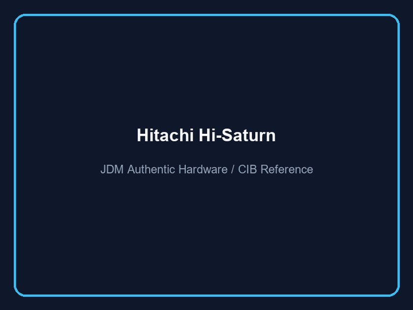

Hitachi co-engineered the Saturn's SH-2 microprocessors and released their own licensed high-end variant: the Hi-Saturn (MMP-1 / MMP-11). Boasting an ultra-sleek matte black chassis with metallic gold logos and factory-installed Video CD MPEG card, it is one of the rarest official Saturn variants in the world.
MPEG CARD & CAR-NAVI ACCESSORIES: 1) Authentic Hi-Saturn consoles feature the 'HITACHI' logo on the lid and gold Hi-Saturn badge. 2) The rear Video CD card slot should contain the genuine Hitachi MPEG decoder board. 3) For the ultra-rare 'Navi Hi-Saturn' (MMP-1000): verify the 5-inch fold-out LCD screen and GPS antenna ports are undamaged. 4) Check the controller: genuine pads feature the debossed Hitachi logo on the front face.
💡 Insider Tip: Units with the factory MPEG movie card installed can play high-bitrate VCD video discs and enhanced movie playback in compatible games like Lunar: Silver Star Story!
| Risk Level | Japanese Term (Kanji) | Real-World Meaning for Overseas Buyers |
|---|---|---|
| 🟢 Safe | 動作確認済Tested & Working | Safe to buy. Seller confirmed normal boot and operation. |
| 🟢 Safe | 箱説なしLoose / No Box or Manual | Working authentic item missing collector packaging. Best value for players. |
| 🔴 Fatal Trap | 動作未確認Untested | TRAP ON FLEA MARKETS. On Mercari JP, private sellers often use "Untested" to hide known dead units while avoiding returns. |
| 🔴 Fatal Trap | 現状品 / 部品取りAs-Is / For Parts | Confirmed broken unit sold strictly for spare parts. |
| Risk Level | Consoles Listing Term | Hardware Reality & Buyer Verdict |
|---|---|---|
| 🟢 Safe | 本体ヤケ / 変色ABS Plastic Yellowing | Cosmetic yellowing common on white/grey Japanese consoles. Does not affect internal hardware reliability. |
| 🟡 Modder Only | 時計電池切れDead Clock Battery | Requires a simple CR2032 coin battery swap (e.g., Sega Saturn back slot). |
| 🔴 Fatal Trap | 通電のみ確認Power Light Only | FATAL RED FLAG. The power LED turns on, but there is NO video/audio output (dead capacitors or GPU/PPU failure). |
| 🔴 Fatal Trap | ディスク読み込まず / 音楽CD画面Disc Read Error | Failing optical laser pickup on CD/GD-ROM consoles. |
| 🔴 Fatal Trap | ターミネータパック欠品Missing Jumper Pak | For N64, the console will not output video without the front memory pak installed. |
How to avoid hidden shipping bloat and foreign exchange fees when importing from Japan:
Why: Every item is tested and authenticated by store staff before shipping. Look for frequent "Free Shipping / 0 Yen Commission" campaigns on Buyee.
Why: When combining multiple consoles or boxed games via proxy, standard consolidation often leaves inner seller boxes intact, causing DHL/FedEx volumetric weight (容積重量) to explode to $60–$100+. Always request downsizing or consider proxies known for compact repacking when building large hauls.
Why: Proxy platforms often embed a 3%–6% exchange rate markup when charging in USD/EUR. Whenever possible, set your payment method (PayPal or zero-FX credit card) to bill directly in Japanese Yen (JPY) to save on every order.
Pre-configured search links for "ハイサターン 本体 日立 MMP" across Japan's top 3 marketplaces:
Protect your authentic import or upgrade your setup with these proven tools:
We built the first 150 authenticity guides—now let's expand this database together! Tell us which Japanese console, cartridge, or controller you want us to add next.
➕ Request Guide #151 →Retro games are more than just plastic and circuits—they are cherished memories. Unfortunately, there are sellers out there today who try to take advantage of international fans by selling fake cartridges and doctored consoles. Nothing ruins the joy of retro gaming faster than realizing you were sold a counterfeit.
As a Japanese gamer, I want everyone around the world to experience our gaming heritage safely and authentically. By using the verification checklists and curated Japanese search links on this site, you can drastically reduce the risk of encountering fakes. My biggest wish is that visiting this site gives you total peace of mind, allowing you to focus on what truly matters: the joy of playing real Japanese retro games.